5. Managing Files and Sets
Various types of files are used in making music with Live, from those containing MIDI and audio, to more program-specific files such as Live Clips and Live Sets. This chapter will explain everything you need to know about working with each of these file types in Live.
5.1 Sample Files
A sample is a file that contains audio data. Live can play both uncompressed file formats (WAV, AIF and Sound Designer II for Mac) and compressed file formats (MP3, AAC, Ogg Vorbis, Ogg FLAC and FLAC).
As Live plays the samples directly from disk, you can work with a large number of (large) samples without running into RAM memory limitations. Please note, however, that you may run into disk throughput problems if your disk is nearly full, and/or (on Windows systems) highly fragmented. Hard drive rotation speed can also affect disk performance. Refer to the section on managing the disk load for more information.
Live can combine uncompressed mono or stereo samples of any length, sample rate or bit depth without prior conversion. To play a compressed sample, Live decodes the sample and writes the result to a temporary, uncompressed sample file. This usually happens quickly enough that you will be able to play the sample right away, without waiting for the decoding process to finish.
Note: When adding a long sample to a project, Live might tell you that it cannot play the sample before it has been analyzed. Please see the section on analysis for an explanation.
5.1.1 The Decoding Cache
To save computational resources, Live keeps the decoded sample files of compressed samples in the cache. Maintenance of the cache is normally not required, as Live automatically deletes older files to make room for those that are new. You can, however, impose limits on the cache size using the File & Folder Settings’ Decoding Cache section. The cache will not grow larger than the Maximum Cache Size setting, and it will always leave the Minimum Free Space on the hard disk. Pressing the nearby Cleanup button will delete all files not being used by the current Live Set.

5.1.2 Analysis Files (.asd)
An analysis file is a little file that Live creates when a sample file is brought into the program for the first time. The analysis file contains data gathered by Live to help optimize the stretching quality, speed up the waveform display, and automatically detect the tempo of long samples.
When adding a long sample to a project, Live might tell you that it cannot play the sample before it has been analyzed. This will not happen if the sample has already been analyzed (i.e., Live finds an analysis file for this sample), or if the Record, Warp & Launch Settings’ Auto-Warp Long Samples preference has been deactivated.
An analysis file can also store default clip settings for the sample:
Clicking the Clip View’s Save button will store the current clip’s settings with the sample’s analysis file. The next time the sample is dragged into Live, it will appear with all its clip settings intact. This is particularly useful for retaining Warp Marker settings with the sample. Storing default clip settings with the analysis file is different from saving the clip as a Live Clip.
While analysis files are a handy way to store default information about a particular sample’s settings, keep in mind that you can use different settings for each clip within a Live Set — even if those clips refer to the same sample on disk. But if you drag a new version of the sample into a Live Set, Live will use the settings stored in the analysis file for the newly created clip.
The analysis file’s name is the same as that of the associated sample, with an added “.asd“ extension. Live puts this analysis file in the same folder as the sample.
Samples that have an .asd file are displayed like this in the browser.
 Samples without an .asd file look like this.
Samples without an .asd file look like this.
The analysis files themselves do not appear in Live’s browser.
Note that you can suppress the creation of .asd files by turning off the Create Analysis Files option in the File & Folder Settings. All data (except for the default clip settings) can be recreated by Live if the .asd file is missing, however this will take some time for longer samples.
5.1.3 Exporting Audio and Video
The File menu’s Export Audio/Video command allows you to export Live’s audio output as new samples. The resulting files can be used to burn an audio CD for listening purposes or a data CD, which could serve as a backup of your work or be used with other digital audio applications. If your Set includes video, you can also use the Export Audio/Video command to export this to a new video file, which will be created in the same directory as the rendered audio files.
5.1.3.1 Selection Options

The Export dialog’s Rendered Track chooser offers several options for which audio signal to render:
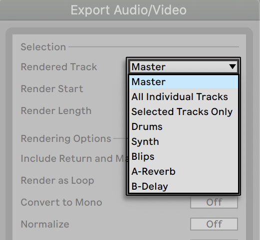
- Main — The post-fader signal at Live’s Main output. If you are monitoring the Main output, you can be sure that the rendered file will contain exactly what you hear.
- All Individual Tracks — The post-fader signal at the output of each individual track, including return tracks and MIDI tracks with instruments. Live will create a separate sample for each track. All samples will have the same length, making it easy to align them in other multitrack programs.
- Selected Tracks Only — This is identical to the All Individual Tracks option, but only renders tracks that were selected prior to opening the Export dialog.
- (single tracks) — The post-fader signal at the output of the selected track.
The other Selection fields determine the start time and length of the exported material:
- Render Start — Sets the position at which rendering will begin.
- Render Length — Determines the length of the rendered sample.
Tip: A fast way to set both the Render Start and Length values is to select a range of time in the Arrangement View prior to invoking the Export Audio/Video command. But remember — a rendered audio file contains only what you heard prior to rendering. So, for example, if you’re playing back some combination of Session View clips and Arrangement material, then that is what will be captured in your rendered file — regardless of which view is active when you render.
5.1.3.2 Rendering Options

The Export dialog offers several audio rendering options:
- Include Return and Main Effects – If this is activated, Live will individually render each selected track with any return tracks used by that track, as well as effects used in the Main track. This is especially useful when rendering material for a live performance, or when providing stems to a mixing engineer or remix artist.
- Render as Loop — If this is activated, Live will create a sample that can be used as a loop. For example, suppose your Live Set uses a delay effect. If Render as Loop is on, Live will go through the rendering process twice: The first pass will not actually write samples to disk, but add the specified delay effect. As the second pass starts writing audio to disk, it will include the delay “tail“ resulting from the first pass.
- Convert to Mono — If this is activated, Live will create a mono file instead of a stereo file.
- Normalize — If this is activated, the sample resulting from the render process will be normalized (i.e., the file will be amplified so that the highest peak attains the maximum available headroom).
- Create Analysis File — If this is activated, Live will create an .asd file that contains analysis information about the rendered sample. If you intend to use the new sample in Live, check this option.
- Sample Rate — Note that your choice of sample rate works as follows: if you select a sample rate equal to or higher than the rate you’re using in your project (as set in the Audio tab of Live’s Settings), Live will export in a single step, at the sample rate you’ve chosen in the Export dialog. If you export at a sample rate that is lower than your current project sample rate, Live will first export at the current project sample rate and then downsample the file in a second step using a high-quality process. Note that this may take a few moments.
5.1.3.3 Encoding Options
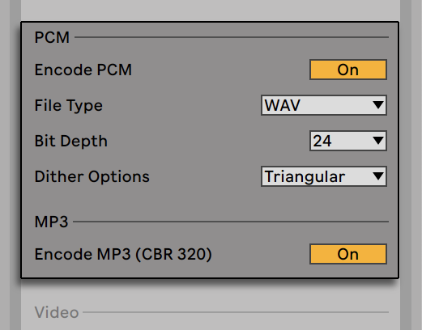
- Encode PCM — If activated, a lossless audio file is created.
- File Type — WAV, AIFF, and FLAC formats are available for PCM export.
- Bit Depth,Dither Options — If you are rendering at a bit depth lower than 32-bit, choose one of the dither modes. Dithering adds a small amount of noise to rendered audio, but minimizes artifacts when reducing the bit depth. By default, Triangular is selected, which is the “safest“ mode to use if there is any possibility of doing additional processing on your file. Rectangular mode introduces an even smaller amount of dither noise, but at the expense of additional quantization error. The three Pow-r modes offer successively higher amounts of dithering, but with the noise pushed above the audible range. Note that dithering is a procedure that should only be applied once to any given audio file. If you plan to do further processing on your rendered file, it’s best to render to 32-bit to avoid the need for dithering at this stage. In particular, the Pow-r modes should never be used for any material that will be sent on to a further mastering stage — these are for final output only.
- Encode MP3 — If activated, a CBR 320 kbps MP3 file is created. It is possible to export PCM and MP3 simultaneously. If neither toggle is enabled, the Export button will be disabled.
5.1.3.4 Video Rendering Options

In addition to settings for audio rendering, the Export dialog provides additional options for rendering video:
- Create Video — If this is activated, a video file will be created in the same directory as your rendered audio. Note that this option is only enabled if you have video clips in the Arrangement View. Also, it is not possible to only render a video file — enabling video rendering will always produce a video in addition to rendered audio.
- Video Encoder — This chooser allows you to select the encoder to use for the video rendering. The choices you have here depend on the encoders you have installed.
- Video Encoder Settings — This button opens the settings window for the selected encoder. Note that the settings options will vary depending on the encoder you have chosen. Certain encoders have no user-configurable options. In this case, the Edit button will be disabled.
Once you’ve made your selections and clicked Export to begin the rendering process, audio rendering will begin. After the audio rendering is complete, the video will be rendered. Note that, depending on the encoder used, video rendering may occur in more than one pass. Live will display a progress bar that will indicate the status of the process.
Unless you’ve specified a special window size or aspect ratio in the encoder settings, the rendered video file will play back exactly as it appeared during real time playback in Live. The video file will also contain the rendered audio.
For more information about working with video in Live, see the Working with Video chapter.
5.1.3.5 Real-Time Rendering
Normally, rendering happens as an offline process. But if your Set contains an External Audio Effect or External Instrument that routes to a hardware effects device or synthesizer, the rendering process is a bit different. In this case, rendering the Main output happens in real time. If you render single tracks, all tracks that don’t route to an external device anywhere in their signal paths will be rendered offline. Then, any tracks that do access these devices will be rendered in real time. Live will automatically trace each track’s signal flow and detect if real-time rendering is necessary. You’ll then be presented with several options when you start to render:

- Skip — By default, Live will wait for ten seconds before starting a real-time render. This should allow any sound from external devices to fade out, but if you need more time (for example, if you’re waiting for a long reverb tail), you can increase the wait time by typing a new number in the number box. On the other hand, if you’re sure that your external devices aren’t making any sound, you can speed the process along by pressing “Skip,“ which will start the render immediately.
After the render has begun, the dialog changes to show a recording progress bar:
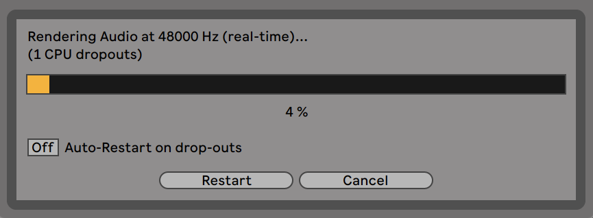
- Auto-Restart on drop-outs — Rendering in real-time requires somewhat more CPU power than non-real-time rendering, and in some cases drop-outs (small gaps or glitches in the audio) can occur. Live detects when drop-outs happen, and rendering will start again from the beginning if the Auto-Restart option is enabled.
- Restart — Manually restarts the rendering process.
- Cancel — Stops the rendering process and deletes the partially rendered file.
The number of rendering attempts (if there has been more than one) will also be listed in the dialog box. If you find that dropouts and restarts keep happening, you should close other running applications to allow more processing power for rendering. Please see the chapter on computer audio resources for more tips on improving performance.
5.2 MIDI Files
A MIDI file contains commands that prompt MIDI compatible synthesizers or instruments, such as Live’s Simpler, to create specific musical output. MIDI files are exported by hardware and software MIDI sequencers. Importing MIDI files into Live works differently than with samples: MIDI file data is incorporated into the Live Set, and the resulting MIDI clips lose all reference to the original file. MIDI files appear with a special icon in the browser.
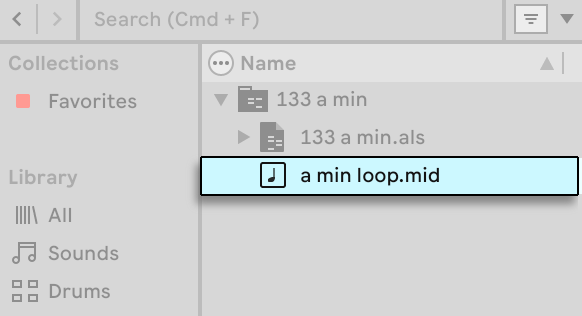
You can import MIDI files by using the browser or the Create menu’s Import MIDI File… command. Note that when using the Import MIDI File… command in the Arrangement View, the file will be inserted at the Insert Marker position. When using the command in the Session View, the file will be inserted in the currently selected clip slot.
5.2.1 Exporting MIDI Files
Live MIDI clips can be exported as Standard MIDI files. To export a MIDI clip, use the File menu’s Export MIDI Clip command. This command will open a file-save dialog, allowing you to choose the location for your new MIDI file.
Exporting a MIDI file is different from saving the clip as a Live Clip.
5.3 Live Clips
Individual audio or MIDI clips can be exported to disk in the Live Clip format for easy retrieval and reuse in any project. Audio clips only contain references to samples on disk (rather than the audio data itself), so they are very small, which makes it easy to develop and maintain your own collection.
To save a clip from the open Live Set to disk, simply drag it to the Places section of the browser and drop it into the Current Project or any user folder. For audio clips, Live will manage the copying of the clip’s sample into this new location based on the selection in the Collect Files on Export chooser. You can then type in a new name for the clip or confirm the one suggested by Live with Enter.
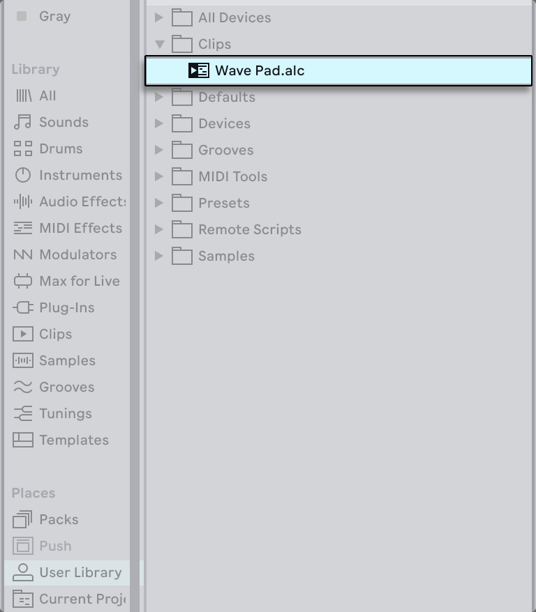
Live Clips are a great way of storing your ideas for later use or development, as they save not only the original clip, including all its clip and envelope settings, but also the original track’s devices. In order to recreate a Live Clip’s device chain, either drag it into a track containing no clips or devices, or drag it into the space in the Session or Arrangement View containing no tracks. Note that Live Clips that are imported into tracks already containing devices or clips will appear with their clip settings but not their devices. You could, for instance, drop a bassline Live Clip on an existing track that drives a bass instrument, rather than creating a new track.
Clips belonging to any Live Sets already on disk are also Live Clips. Please see the section on merging Sets for more on this topic.
Note that storing default clip settings with a sample’s analysis file is different from saving a Live Clip. The default clip in the .asd file annotates the sample with sensible default values (warp, gain and pitch settings) so that it will play in a defined way when it is added to a Set. Live Clips, on the other hand, are stored on disk as separate musical ideas. For example, you could create a number of variations from the same audio clip by using different warp, pitch, envelope and effect settings, and store them all as separate Live Clips. In the browser, you could then independently sort and preview these clips, even though they are all referring to the same source sample.
5.4 Live Sets
The type of document that you create and work on in Live is called a Live Set. Think of this as a single “song.“ Sets must be saved inside projects, so that Live can keep track of and manage all of the various components of the Live Set: Live Clips, device presets, any samples used, etc.
5.4.1 Creating, Opening and Saving Sets
Use the File menu’s New Live Set command to create new Live Sets, and the Open Live Set or Open Recent Set command to open existing ones. In the browser, you can double-click or press Enter on a Live Set to open it.
The File menu’s Save Live Set command saves the current Live Set exactly as it is, including all clips and settings.
You can use the Save Live Set As command to save the current Live Set under a different name and/or in a different directory location, or the Save a Copy command to create a copy of the current Live Set with a new name and/or new directory location.
5.4.2 Accessing a Set’s Undo History
The Undo History lists all the actions taken since opening a Set and lets you revert or reapply them up to a specific point. This makes it easy to reverse or recover multiple actions at once, rather than undoing or redoing each step individually.
To open the Undo History, select the Undo History entry from the View menu or use the shortcut CtrlAltZ (Win) / CmdOptionZ (Mac).

Once opened, you will see all the actions in the order they occurred, with the newest at the top and the oldest at the bottom. To restore the Set to a particular action in its history, select that action by either clicking it or navigating to it with the up and down arrow keys and pressing Enter. The actions listed above the selected action are then greyed out to indicate that they have been undone. The actions listed below the selected action remain active, as their changes still apply. You can select a greyed out action to reapply it along with any other undone actions below it.
Note that the Undo History is not saved with a Set once it is closed and is refreshed each time the Set is opened. Creating or opening a Set is treated as the first action in the Undo History and therefore cannot be undone.
5.4.3 Merging Sets
Live makes it easy to merge Sets, which can come in handy when combining work from different versions or pieces. To add all tracks (except the return tracks) from one Live Set into another, drag the Set from the browser into the current Set, and drop it onto any track title bar or into the drop area next to or below the tracks. The tracks from the dropped Set will be completely reconstructed, including their clips in the Session and Arrangement View, their devices, and their automation.

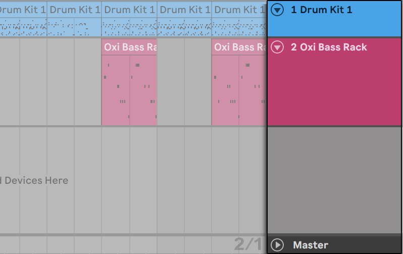
If you prefer to import individual tracks from a Set, you can unfold the Live Set in the browser just as if it were a folder.

You can now drag the individual tracks and drop them as described at the beginning of this section. Any grooves that were saved with your Set are also available as a folder within the unfolded Set.
If you only want the device chain (e.g., a device and its audio or MIDI effects) from another Set, you can drag in the Devices icon from the Set in the browser.

You can also drag Group Tracks and nested Group Tracks from Live’s browser. Group Tracks can be expanded in the browser, allowing you to load an individual track from within.
In addition to unfolding Sets, you can further unfold the tracks within the Sets to access the individual Session View clips that were used on the track:
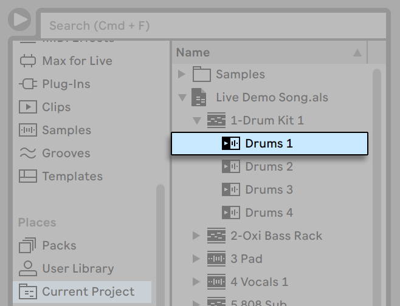
You can browse, preview and import Session View clips from the Set as if they had been stored as individual Live Clips. This means that any Live Set can serve as a pool of sounds for any other, suggesting creative reuse and crossover.
5.4.4 Exporting Session Clips as New Sets
You can export a selection of Session View clips as a new Live Set by dragging them to the browser. To export a Set, first click and drag, or use the Shift or Ctrl (Win) / Option (Mac) modifiers, to select more than one Session View clip. Then, simply drag and drop the clips into the Current Project or any user folder, where you can either confirm Live’s suggested name or type in one of your own.
5.4.5 Template Sets
Use the File menu’s Save Live Set As Default Set… command to save the current Live Set as the default template. Live will use these settings as the initialized, default state for new Live Sets. You can use this to pre-configure:
- Your multichannel input/output setup.
- Preset devices, like EQs and Compressors, in every track.
- Computer key mappings.
- MIDI mappings.
Note that any template Set in Live’s browser can be set as the default Live Set via the Set Default Live Set entry in the Set’s context menu or the File menu.
In addition to this default template, you can create additional template Sets for different types of projects, each with their own unique configuration of tracks, devices, etc. To do this, save the current Live Set using the File menu’s Save Live Set As Template… command. Any Sets saved as a template will appear in the browser’s Templates category and the Templates folder in the User Library. Note that the User Library’s Templates folder is automatically created the first time a template Set is saved. These Sets will then function as templates: they will load with the configuration you saved, but with the name Untitled.als, ready to be used as a new Set.
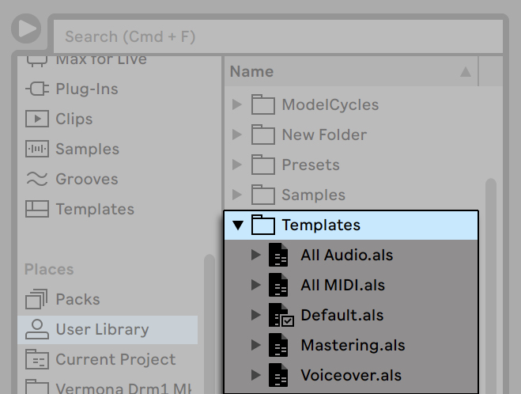
5.4.6 Viewing and Changing a Live Set’s File References
To view a list of the files referenced by the current Live Set, choose the Manage Files command from the File menu, click the Manage Set button, and then click the View Files button. Live will display one line for each file used by the Live Set. To list all clips or instruments in the Live Set where the file is actually used, click the triangle to expand the line. Here is what you can do:
- Replace a file — Dragging a file from the browser and dropping it on an entry in the list makes the Live Set reference the new file instead of the old one. For samples used in audio clips, Live retains the clip properties; the Warp Markers are kept if the new sample has the same or a greater length as the old sample and discarded otherwise. Please note that replacing a sample will change all clips in your Set that reference this sample.
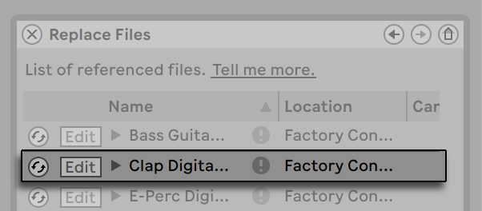
- Hot-swap files — Using the Hot-Swap button at the left-hand side of each entry, you can quickly browse through alternatives for the file that is currently being referenced. This is like dragging files here, only quicker.

- Edit a referenced sample — using an external application (which can be chosen in the Settings’ File/Folder tab). Clicking the Edit button will open the referenced sample in the external application. The sample will remain offline as long as the Edit switch is engaged. For samples used in audio clips, the current set of Warp Markers is retained only if the sample length remains the same as before. Note that the Edit button is only available for samples, not for other types of files such as Max for Live devices.

- View a file’s location — The Location column states if a file is missing, or if it resides in your User Library, a Project or somewhere else (“external“). When unfolded, the entry shows the specific places in the Set where the file is used.
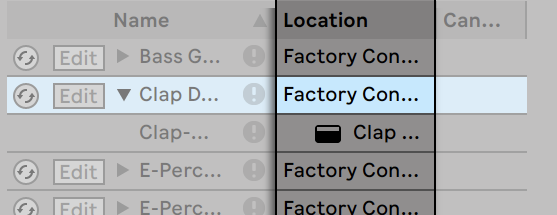
5.5 Live Projects
A Live Project is a folder containing Live-related files that belong together. Consider, for example, work on a piece of music: You start out with an empty Live Set; you record audio and thereby create new sample files; you drag in samples from collections; you save different versions of the Live Set along the way so that you can go back and compare. Perhaps you also save Live Clips or device presets that “belong“ to this particular musical piece. The project folder for this Live Project will maintain all the files related to this piece of music — and Live’s File Manager will provide the tools you need to manage them.
5.5.1 Projects and Live Sets
When you save a Live Set under a new name or in a new folder location, Live will create a new project folder and store the Live Set there — unless you are saving the Live Set into an existing Live Project. Let’s look at an example to illustrate this process:
We have recorded some audio into a new Live Set. We now save the Live Set under the name “Tango“ on the Desktop. The Desktop is available in the browser because we have previously added it as a user folder. Here is the result as displayed by the Live browser:

The project folder (“Tango Project“) contains the Live Set (“Tango.als“) and a Samples folder, which in turn contains a Recorded folder with two samples in it. Note that the current Project is also indicated in the title bar of Live’s application window.
Next, we record another track into our Project. We save the modified version of the Live Set under a new name so that we do not lose the previous version. Accepting the Save As command’s default suggestion, we store the new version of the song in the Tango Project folder.
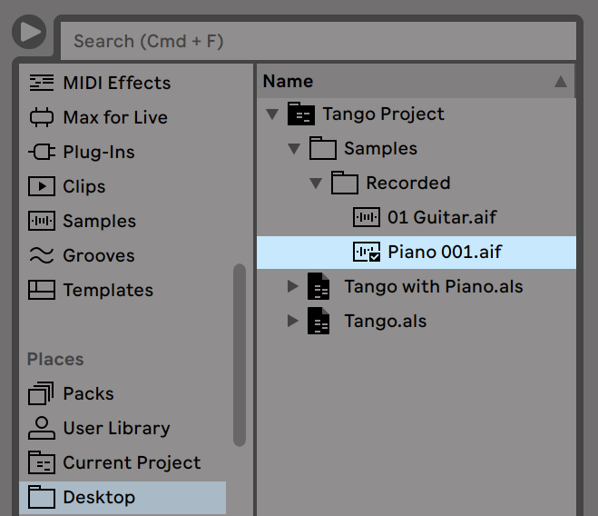
The Tango Project now contains two Live Sets, and its Samples/Recorded folder contains the samples used by both of them.
And now for something completely different: We choose the File menu’s New Live Set command and record a samba tune. As this has nothing to do with our tango dabblings, we decide to save it outside the Tango Project folder, say on the Desktop. Live creates a new project folder named Samba Project next to Tango Project.
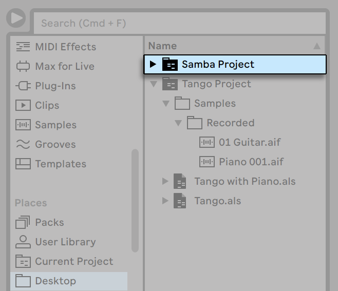
So far we have seen how to create Live Projects and save versions of Live Sets into them. How do we open a Project? Simply by opening any of its contained Live Sets. Double-clicking “Tango with Piano.als“ opens that Set and the associated Project — as displayed in Live’s title bar.
Let’s suppose that, in the course of our work on “Tango with Piano.als,“ we get sidetracked: The piece evolves towards something entirely different, and we feel that it should live in a Project of its own. So, we “Save As…“ under a new name and in some location outside the current Project, say the Desktop:
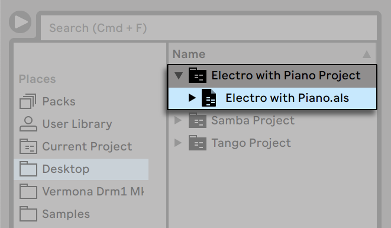
Note that the new project folder has no Samples folder (yet). “Electro with Piano.als“ is still referencing the piano sample from the original Tango Project. There is nothing wrong with this except for when the Tango Project is moved away or deleted; then “Electro with Piano.als“ will be missing samples. You can prevent this by collecting external files. Even after the fact, Live’s tools for searching missing files can help solve this problem.
There is actually no need to keep a Project’s Live Set exactly one level below the Project itself. Within a project folder, you can create any number of sub-folders and move files around to organize them as desired, although you may need to use the File Manager to “teach“ the Project about the changes you’ve made.
In general, Live will do what it can to prevent situations such as orphaned (Project-less) Live Sets, which have the potential of confusing both the user and Live’s file management tools. It cannot, however, control situations in which Sets or files are moved out of order and become disorganized via the Explorer (Windows)/Finder (Mac).
A note for users of older Live versions: Live does not allow overwriting Live Sets that were created by older major versions to prevent compatibility problems. Instead, you will be requested to “Save As…“. Doing this will ensure that the newly saved Live Sets reside in project folders.
5.5.2 Projects and Presets
By default, new instrument and effect presets are stored in your current Project. At times however, it may make more sense to save a preset to another folder or to your User Library, so that you can access them from other Projects. You can drag a preset between folders after saving it, or simply drag the title bar of the device over a folder in the sidebar, wait for the content pane to open, and then drop it into the content pane, adding it to the folder.
When saving presets that contain samples to a new location, Live may copy the samples depending on the settings in the Collect Files on Export chooser in the Library Settings. You can then type in a new name for the device or confirm the one suggested by Live with Enter.
5.5.3 Managing Files in a Project
Live’s File Manager offers several convenient tools for managing Projects. Once you’ve opened a Live Set that is part of the Project you wish to manage, choose the Manage Files command from the File menu, and then click the Manage Project button. The File Manager will present you with an overview of the Project’s contents and tools for:
- Locating files that the Project is missing.
- Collecting external files into the Project folder.
- Listing unused files in the Project.
- Packing a Project in Pack format.
5.6 Locating Missing Files
If you load a Live Set, Live Clip or preset that references files which are missing from their referenced locations, Live’s Status Bar (located at the bottom of the main screen) will display a warning message. Clips and instrument sample slots that reference missing samples will appear marked “Offline,“ and Live will play silence instead of the missing samples.
Live’s File Manager offers tools for repairing these missing links. Click on the Status Bar message to access these. (This is actually a shortcut for choosing the Manage Files command from the File menu, clicking the Manage Set button, and then clicking the Locate button found in the Missing Files section.) The File Manager will present you with a list of the missing files and associated controls.
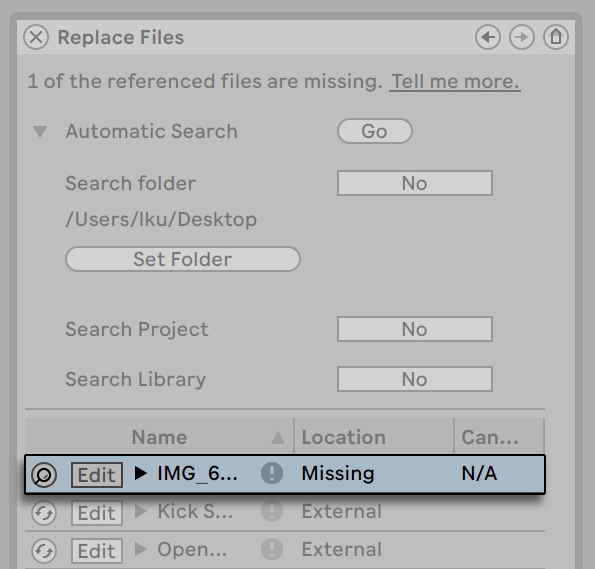
5.6.1 Manual Repair
To manually fix a broken file reference, locate the missing file in the browser, drag it over to the File Manager and drop it on the respective line in the list of missing files. Note that Live will not care if the file you offer is really the file that was missing.
5.6.2 Automatic Repair
Live offers a convenient automatic search function for repairing file references. To send Live on a search, click the Automatic Search section’s Go button. To reveal detailed options for guiding the automatic search function, click the neighboring triangular-shaped button.

- Search Folder — includes a user-defined folder, as well as any sub-folders, in the search. To select the folder, click the associated Set Folder button.
- Search Project — includes this Set’s project folder in the search.
- Search Library — includes the Live Library in the search.
For each missing file, the automatic search function may find any number of candidates. Let’s consider the following cases:
- No candidate found — you can choose another folder and try again, or locate the sample manually.
- One candidate found — Live accepts the candidate and considers the problem solved.
- Several candidates found — Live requires your assistance: Click the Hot-Swap button (i.e., the leftmost item in every line of the list of missing files) to have the browser present the candidates in Hot-Swap Mode. You can now double-click the candidates in the browser to load them, as the music plays if you like.
5.7 Collecting External Files
To prevent broken file references, you can collect (i.e., copy) all external files used in a Set into its Project folder. This means that instead of referencing a file’s original path when a Set is opened (which could break if the file is moved to a different location), the files are contained within the Project itself.
You can collect files via the Collect All and Save option in the File menu or by using the File Manager.
When using the File menu option, the Collect All and Save dialog lets you choose which files to copy into the Project based on their location.
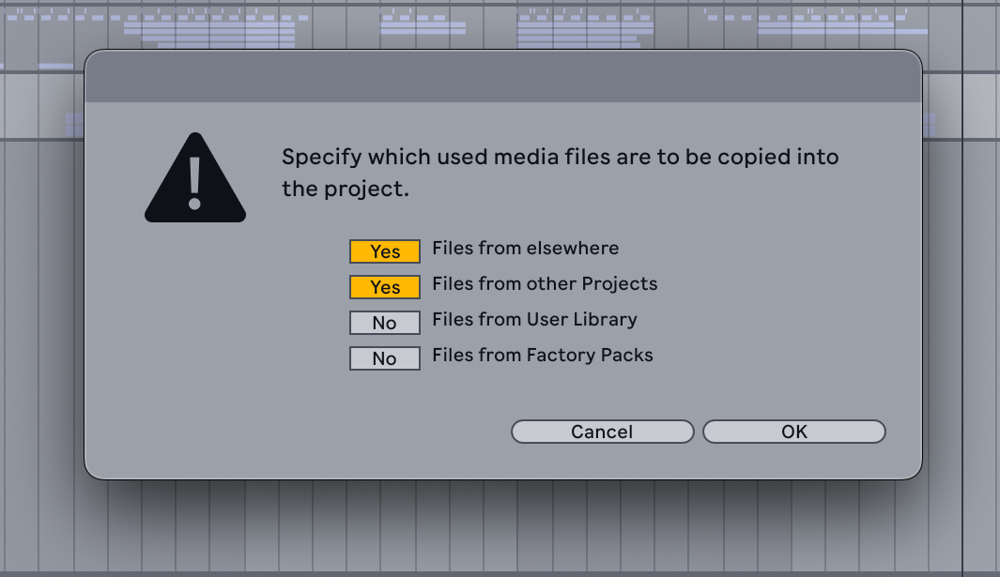
You don’t necessarily need to collect the files from all locations, as this can significantly increase the size of the Project folder, especially if many multisampled instruments are used in the Set. If you know you don’t plan on uninstalling or moving any Packs or the User Library, there is no need to collect files from those locations, since it is unlikely that their paths would get broken.
Click the OK button to confirm your choices. The files are then added to their corresponding subfolder in the Project’s Samples folder (for audio files) or Presets folder (for devices).
To collect files via the File Manager, first open it using the Manage Files entry in the File menu or the File Manager entry in the View menu, then click the Manage Set button.

In the External Files section, you will see an overview of the files currently used in the Set, grouped by their location.
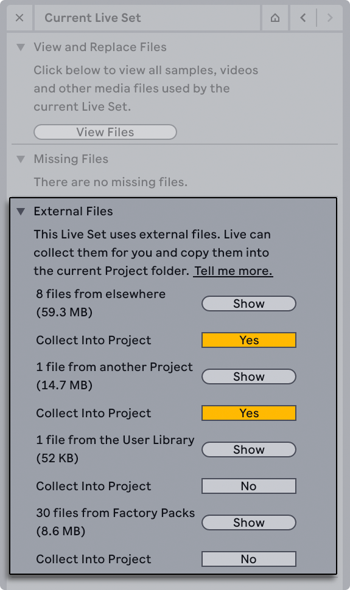
Live considers any files that are outside the Project folder as external — this includes files from Packs, other Projects, the User Library, and files located elsewhere on your computer.
For each location, the number of files is shown along with the total size. You can click the Show button to display the files from a certain location in the browser. Enable the toggle to the right of the Collect Into Project entry for the files that you want to copy. Then click the Collect and Save button at the bottom of the File Manager to confirm your choices.
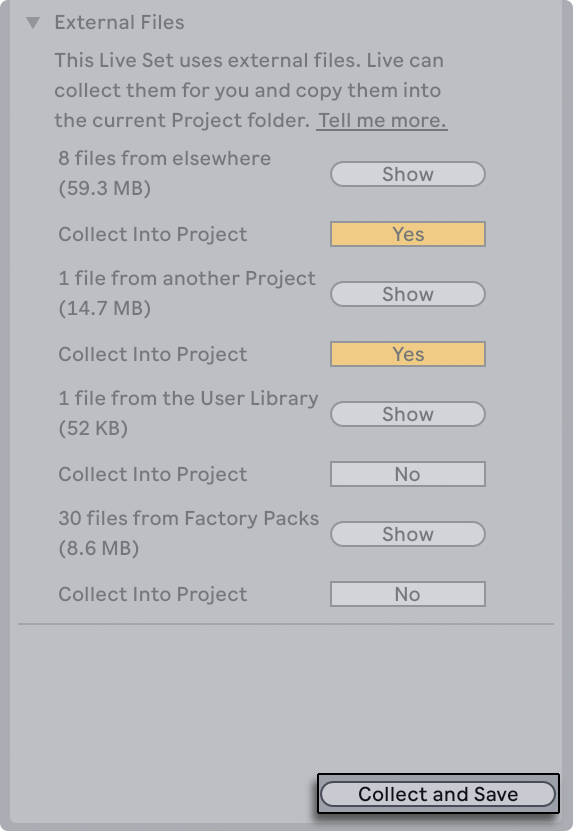
5.7.1 Collect Files on Export
You can move clips, presets, and tracks from an open Live Set into certain folders in the Places section of the browser, such as the User Library or a folder you have added. This can be useful if you want to share files between Projects or add presets to your User Library.
The Collect Files on Export chooser in the Library Settings determines whether files are copied when they are moved from a Set into the browser. The chooser provides the following options:
- Always — Files are automatically copied into the destination folder without notification. This is the default setting.
- Ask — A dialog appears once a clip, preset, or track is moved, where you can choose whether its dependent files are copied. Click Copy to save them to the destination folder, Don’t Copy to move the item with the original referenced paths for its dependent files, or Cancel to quit the process. If you click Don’t Copy or Copy, the item is then highlighted in the browser. You can rename it or keep its original name. Click the item or press Enter to confirm; if you originally chose Copy, the dependent files are then copied.
- Never — Files are not copied when moved and the original file references are used.
It is only possible to move one clip or preset into a folder in the browser at a time, but you can move multiple tracks. When moving a preset, the file is saved with its corresponding Live-specific file extension in the destination folder. When moving a clip, track, or selection of tracks, an .alc file (for a clip) or an .als file (for tracks) is created. If Collect Files on Export is set to Always, or set to Ask and you click Copy, a Project folder is also created, along with its corresponding subfolders.
The Collect Files on Export setting is also applied when using the Save Preset button in the device title bar to add a preset that contains samples to the User Library.
5.7.2 Aggregated Locating and Collecting
It can be useful to periodically resolve any file management issues so that you don’t have to deal with broken file references later on. With the File Manager, you can locate missing files and collect external ones not only for an open Live Set, but also for the User Library, the current Project, and any other Projects.
To manage files from the User Library or the current Project, open the File Manager with the Manage Files entry in the File menu or the File Manager entry in the View menu. Then click either the Manage User Library button or the Manage Project button.
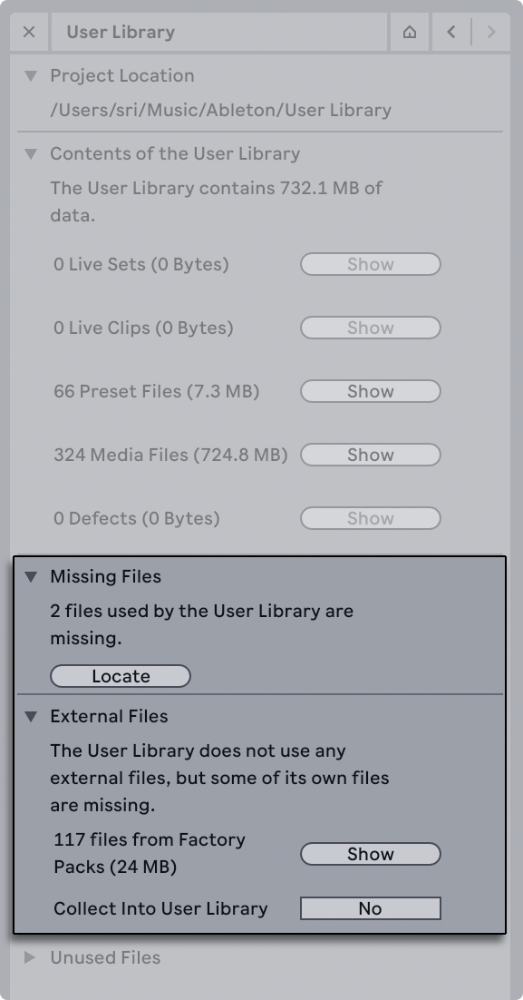
You can also right-click any Project folder in the browser and select the Manage Project option to manage its associated files in the File Manager.

Make sure to click the Collect and Save button at the bottom of the File Manager once you are done managing the files to confirm your changes.
5.8 Finding Unused Files
With the File Manager, you can quickly find unused files in a Project and display them in the browser. From there, you can preview or delete them as needed. To do this, open the File Manager using the Manage Files entry in the File menu or the File Manager entry in the View menu. Then click the Manage Project button and unfold the Unused Files section.
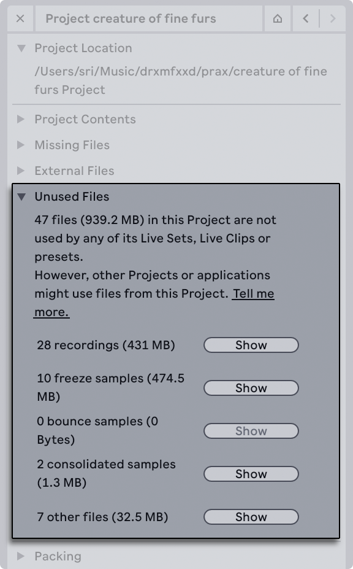
Live considers any file in the Project which is not referenced by its Sets, clips, or presets as unused — even if the file is actively used in other Projects.
The unused files are organized based on their respective folder in the Project. In the File Manager, the entries are shown as sample types (such as recordings and freeze samples) and other files rather than the exact folder names. You can click the Show button to the right of a file type to display the files from that folder in the browser.

You can then preview any samples, as well as delete files if needed using the Delete key or the Delete context menu option.
Note that deleting files from one Project can cause broken file references if the files are used in another Project. To prevent unintended losses, you can collect external files into each of your Projects before managing any unused files.
It is also possible to find unused files in the User Library. To do so, click the Manage User Library button in the File Manager and unfold the Unused Files section.

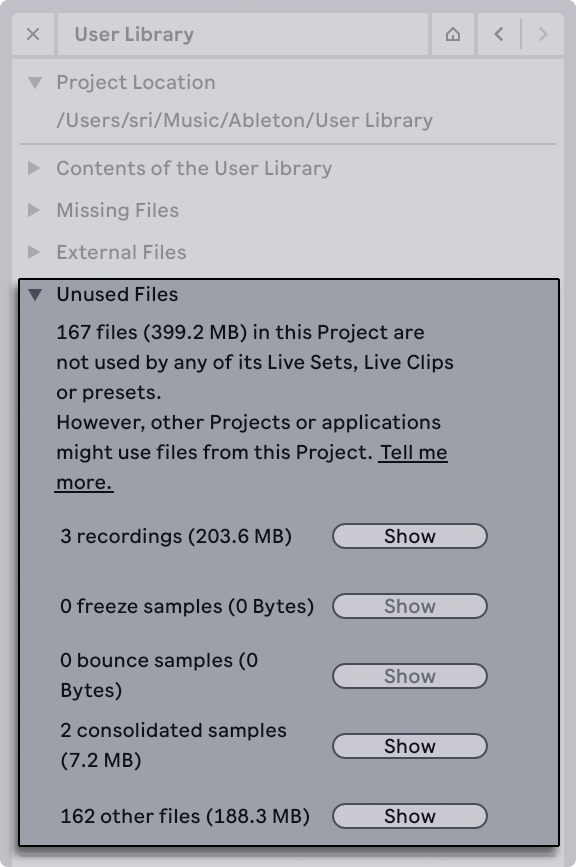
As with Projects, you can use the Show button to view and access the unused files in the browser.
5.9 Packing Projects into Packs
You can turn any Live Project into a Pack (i.e., an .alp file) via the File Manager. This makes it easy to archive Projects for later use or share them with collaborators. When you install a Project-based Pack, the complete folder is restored, including its corresponding Set (or all Sets if the Project originally contained multiple .als files).
To create a Pack from a Project, open the File Manager using the Manage Files entry in the File menu or the File Manager entry in the View menu. Then click the Manage Project button.

In the Packing section, click the Create Pack button to generate the .alp file. You will then be prompted to pick a save location for the Pack. You can choose any folder that you like, though it could be useful to have one specific folder for all of your Project-based Packs, similar to the recommended setup for third-party Packs.

Note that if your Project contains external files, they are not automatically saved with the Pack, so it’s a good idea to collect them first. That way, the external files are copied into the Project folder, which helps to avoid broken file references.
The packing process can take a bit of time if there are multiple Sets with many samples and devices in the Project. Once completed, a notification appears in Live and the new .alp file is added to the chosen folder.

Live uses lossless compression to minimize the Pack’s file size. This means the total size for the .alp can be up to 50% smaller than the unpacked folder, depending on the number of files in the Project. The original Project is not affected by the packing process, so you can keep it as is or delete it if you don’t need it anymore.
You can install the Pack at any time to restore the Project folder. To do so, use any of the following methods:
- Double-click the .alp file.
- Drag the .alp file into Live.
- Select the Install Pack… option in Live’s File menu.
A dialog will then appear where you can select a location for the unpacked Project folder. For easy access, it is recommended to save the Project to the same folder where the .alp is located. You can add that folder to the Places section in the browser and drag files from the Project into Live.

5.10 File Management FAQs
5.10.1 How Do I Create a Project?
A Project is automatically created whenever you save a Live Set, except when you save it into a preexisting Project.
5.10.2 How Can I Save Presets Into My Current Project?
You can save presets directly to the current project by dragging from the device’s title bar and dropping into the Current Project label in the browser. You can then use the File Management tools, collect any referenced samples, etc.
5.10.3 Can I Work On Multiple Versions of a Set?
If you’d like to work on different versions of the same Live Set, save them into the same Project. This will usually be the Project that was created when you saved the first version of the Live Set. If a Project contains multiple Live Sets it will only collect one copy of any samples used by the various versions, which can save disk space and help with organization.
5.10.4 Where Should I Save My Live Sets?
You can save Live Sets anywhere you want, but saving to pre-existing Project folders can cause problems, and should be reserved for special cases. You should only save a Live Set to an existing Project if it is somehow related to the Project — for example, an alternate version of a song that’s already in the Project.
5.10.5 Can I Use My Own Folder Structure Within a Project Folder?
You can organize your files any way you want within a Project, but you’ll need to use the File Manager to relink the files that you’ve moved around:
- In Live’s Browser or via your operating system, reorganize the files and folders within your Project folder.
- Navigate to the Project folder in the Browser and choose Manage Project via the context menu.
- If you’ve changed the original location of any samples used in the Project, the Missing Samples section of the File Manager will indicate this. Click the Locate button to search for the samples.
- Since you know that your samples are all in the Project folder, unfold Automatic Search. Then enable the Search Project and Fully Rescan Folders options. Finally, click Go to initiate the search.
- When searching is complete, click Collect and Save at the bottom of the File Manager to update the Project.